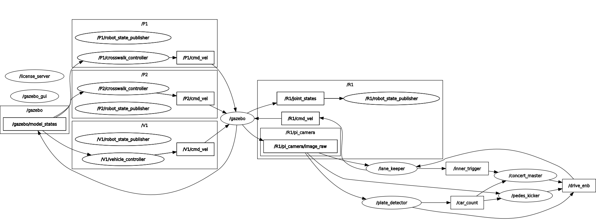
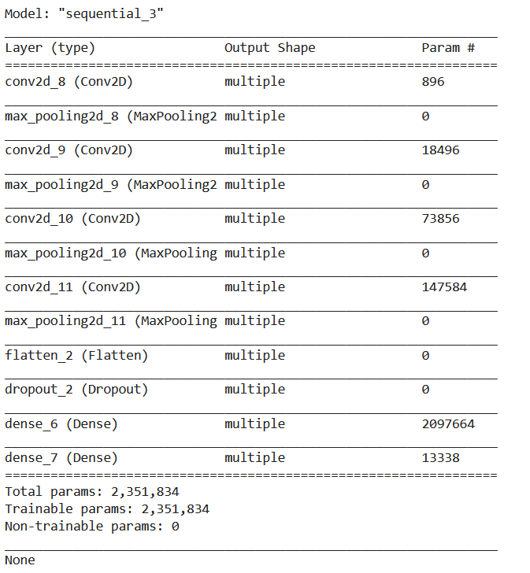

Autonmous Treasure Retrieval Robot
A robot designed to navigate an obstacle course while retrieving objects for 2021 Annual Engineering Physics Robotics Competition
Learn moreIn building this project, I learned about machine learning, computer vision and using Linux. The objective of the competition was to navigate the Gazebo simulation environment autonmously while reading the license plates of nearby vehicles, waiting at pedestrian crossings, and avoiding another moving vehicle. I worked with Mark Long to develop our solution which resulted in a 2nd Place Finish, with 0 off course traversal, 11/12 license plates accurately read and 1 min 46 s total track time (fastest completion).
Our solution was developed in 2 separate modules, driving and plate detection, outlined in sections below. For communication between modules and software architecture, we employed ROS, a robotics framework commonly used by researachers to speed up development. Our ROS network is seen below.
To detect license plates, we also used computer vision techniques and the Python OpenCV library. To identify the characters on the license plates as well as the relevant car, we developed Convolutional Neural Networks using the Keras library. To train our CNNs, we developed a bash scripting solution for automated data collection from the simulated environment. Google Colab was an essential tool for development and testing of our networks.
For driving, we used classical computer vision techniques. This included contour detection, PID line following, with heavy use of the Python OpenCV library. We also implemented a state machine to define the state of the rover at all times.
A robot designed to navigate an obstacle course while retrieving objects for 2021 Annual Engineering Physics Robotics Competition
Learn more
As an electrical member of this student design team team, I am working on building an autonomous sailbot to sail from Vancouver, BC to Maui, HI.
Learn more